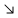
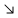
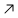
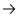
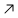
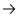
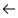

Today · 15:24
1. Starknet is a decentralized Validity-Rollup often referred
Starknet is a decentralized Validity-Rollup (often referred to as ZK-Rollup). It operates as a Layer 2 network over Ethereum. Starknet is a decentralized Validity-Rollup Starknet is a decentralized Validity-Rollup (often referred to as ZK-Rollup). It operates as a Layer 2 network over Ethereum. Starknet is a decentralized Validity-Rollup
 




Today · 15:24
2. Starknet is a decentralized Validity-Rollup often referred
Starknet is a decentralized Validity-Rollup (often referred to as ZK-Rollup). It operates as a Layer 2 network over Ethereum. Starknet is a decentralized Validity-Rollup Starknet is a decentralized Validity-Rollup (often referred to as ZK-Rollup). It operates as a Layer 2 network over Ethereum. Starknet is a decentralized Validity-Rollup
Today · 15:24
3. Starknet is a decentralized Validity-Rollup often referred
Starknet is a decentralized Validity-Rollup (often referred to as ZK-Rollup). It operates as a Layer 2 network over Ethereum. Starknet is a decentralized Validity-Rollup Starknet is a decentralized Validity-Rollup (often referred to as ZK-Rollup). It operates as a Layer 2 network over Ethereum. Starknet is a decentralized Validity-Rollup
